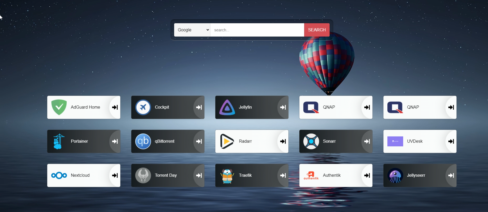
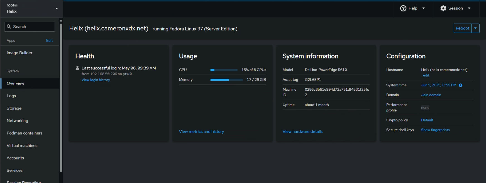

About Cameron

I'm Cameron Dilger. Welcome to my portfolio here built entirely using AWS with technologies such as (S3, CloudFront, Route53, Lambda, DynamoDB, IAM users). My portfolio showcases my knowledge in a wide range of technologies from Active Directory deployments, Cisco Technologies, Virtualization, and Cloud Technologies such as Azure, and AWS. You can see those projects outlined here: Cam's Projects.
I earned my Bachelor of Science in Computer and Information Science, with a focus on Cyber and Network Security, from ECPI University in 2019. With a strong foundation in cloud technology and a passion for continuous learning, I am eager to apply my skills to develop efficient and impactful solutions that improve team workflows. Welcome to my portfolio, where you can witness my dedication to transforming complex challenges into successful outcomes. Discover my journey through the Cloud Resume Challenge and see how my passion for IT solutions and continuous learning drives my work.
Don't forget! Check out my Projects i'm building out and hosting on Gitlab and on my blog Ctrl+Alt+Archive
Work Experience

Cloud Engineer, Customer Managed Services (CMS)
NET3 TECHNOLOGIES - Greenville, SC
August 2023 - Present
- 2024 Performance Review
- 2025 Performance Review
- Manage four customer accounts directly under the Customer Managed Services (CMS) division, ensuring operational continuity and security compliance
- Monitor and troubleshoot backup operations using Acronis Cyber Protect Cloud, resolving stuck jobs and optimizing backup schedules for 100% reliability.
- Implement Extended Detection and Response (XDR) solutions, enhancing threat detection and response across customer environments.
- Oversee security patch management, automating critical updates for Windows and third-party applications to maintain compliance and reduce vulnerabilities.
- Conduct regular vulnerability scans, prioritizing remediation of critical risks
- Document all processes for repeatability and consistency
- Acronis Remote monitoring and management – RMM
- Occasional after hours support and projects
Cloud Engineer
NET3 TECHNOLOGIES - Greenville, SC
March 2022 - Present
- 2024 Performance Review
- 2025 Performance Review
- Complete requests for support submitted through the ticketing system or via phone in a timely manner and document the actions taken to resolve the request
- Escalate the ticket request as required to appropriate team members
- Spearheaded rapid disaster recovery operations, ensuring client systems were restored and operational within one hour—50% quicker than the two-hour timeframe stipulated by our service level agreement (SLA). This swift response minimized downtime and facilitated seamless business continuity during critical periods
- Support Net3 Backup, DR, IaaS, and other cloud solutions
- Create IPSEC VPNs and networks in VMware Cloud Director to facilitate cloud-based disaster recovery
- Monitor client backup and DR status to proactively handle issues
- Streamlined Active Directory user and group management, enhancing security and access control for customer environments.
- Administer Microsoft 365 for customer environments, provisioning and managing user accounts, email configurations, and distribution lists in the O365 Admin Center, ensuring seamless communication for 200+ users.
- Complete all client projects as assigned by the team lead to completion
- Document all processes for repeatability and consistency
- Occasional after hours support and projects
- Onboard new clients and manage cloud backups for multiple clients using Acronis Cyber Protect Cloud
- Onboard new clients and manage cloud disaster recovery for multiple clients using Zerto
- ConnectWise Manage – Ticketing system
- ConnectWise Control – Remote control
- Acronis Remote monitoring and management – RMM
- Assist with errors in Veeam
Information Technology Systems Administrator
Premier Medical Laboratory Services - Greenville, SC
September 2021 to March 2022
- Provided Tier I – Tier II Helpdesk support to end users throughout the corporate office and all distribution centers located across the United States
- Manage Active Directory, managing users, group policies, network shares and domain
- Provisioned and maintained services on the Azure platform
- Assisted with migration of users from on-prem services to Azure and Microsoft 365 services
- Assisted with other hardware and software-related issues as needed
- Created standard images of the Windows operating system for deployment to computers; imaged computers on a regular basis
- Provided documentation and feedback to the Director of IT on how to reduce problems commonly faced by end-users as well as security improvements to current infrastructure
- Provided training to users and other IT staff as needed
- Supported Polycom VOIP Phones
- Ability to troubleshoot and support infrastructure such as wireless, multi-function Printers
Cloud Implementation Engineer - IT Systems Support
Green Cloud Defense - Greenville, SC
December 2020 to August 2021
- Worked with partners and other IT technicians to build-out virtual data centers
- Had access to some of the most popular cloud technologies, such as VMware (vCloud and vSphere), Veeam, S3, Zerto, Cisco, and Fortinet
- Built-out virtual environments (IaaS, DaaS, DRaaS, & BaaS) using a full suite of virtual server tools and products
- Worked with partners to manage the successful migration of data to data centers
- Assisted with the end-user rollout
- Troubleshot the environment to deliver the products partners and customers have purchased
Cloud DR Specialist
Green Cloud Defense - Greenville, SC
September 2019 to December 2020
- Provisioned partner's Virtual Server, Virtual Desktop, Disaster Recovery, and Backup services using technologies like VMware, vCloud, vSphere, Storagecraft ShadowProtect, Image Manager, and Veeam suite of backup products
- Supported all cloud services after install
- Protected data in the cloud through disaster recovery systems that mirror a company’s server and backups that up with virtual servers based on VMware's virtualization software
Help Desk Analyst L2
Getronics - Greenville, SC
2018 to September 2019
- Promoted from Help Desk Analyst L1
- Provided support for Level 1 Analyst escalations
- Managed the incoming call, email, chat, etc., queues for the L1s on shift
- Hands-on Desktop Support in a professional setting
- Imaging
- Password resets
- Diagnose and resolve technical issues related to hardware, software, and network connectivity.
- Provide guidance on the use of company applications and systems..
Skills:
Home Lab

Dell PowerEdge R610(Helix)
Running Fedora Linux 37 - Managed by cockpit

Projects
Contact